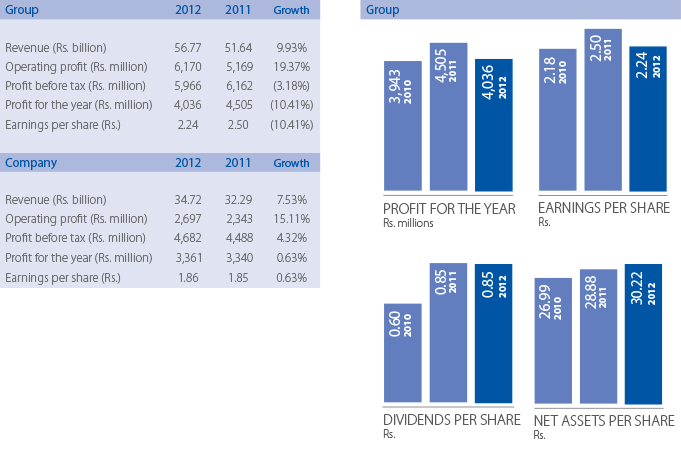
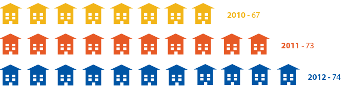

For over 150 years, Sri Lanka Telecom has been the strength and backbone of Sri Lankan telecommunication, taking the nation through the years from the earliest days of telegraph and telephony to the exciting world of futuristic communication technologies we live in today. Every minute, every day, technologies and capabilities change, improve and innovate, almost as we watch. Sri Lanka Telecom is right there at the forefront of this wave of the future.
For high-speed broadband, mobile technologies, home and business telecommunications, we remain unmatched because we're simply way more experienced, way more resourced and way more connected across the island. That's how we bring the future of telecommunications to Sri Lanka - right now.
Name of the Company
Sri Lanka Telecom PLC
Legal FormA public Limited Liability Company incorporated in Sri Lanka in September 1996 under the Conversion of Public Corporations or Government Owned Business Undertakings into Public Limited Companies Act No.23 of 1987 and quoted on the Colombo Stock Exchange in January 2003.
Company Re registration NumberPQ7
Stock Exchange Listing1,804,860,000 Ordinary Shares of the Company are listed in the Colombo Stock Exchange.
Registered AddressTelecom Headquarters, Lotus Road Colombo 01
Board of DirectorsMr. Nimal Welgama - Chairman Mr. Sandip Das Mr. Chan Chee Beng Mr. Jeffrey Jay Blatt Mr. Shameendra Rajapaksa Mr. Jayantha Dharmadasa Mr. Kalinga Indatissa Mr. Lawrence Paratz Ms. Pushpa Wellappili
AuditorsKPMG (Chartered Accountants), No. 32, Sir Mohamed Macan Makar Mw, Colombo 03.
Company SecretaryP W Corporate Secretarial (Pvt) Ltd
Credit RatingFitch Rating
Foreign Currency Rating
Long-Term Foreign-Currency IDR: BB−
Long-Term Local-Currency IDR: BB−
National
Long-Term Rating: AAA(lka)
Outlooks
Long-Term Foreign: Currency IDR: Stable
Long-Term Local-Currency IDR: Stable
National Long-Term Rating: Stable
Long term foreign currency – "B+" outlook stable
Long term local currency – "B+" outlook stable
Bank of Ceylon People's
Bank Commercial
Bank of Ceylon PLC
HSBC Bank
Hatton National Bank PLC
Sampath Bank
Standard Chartered Bank
Seylan Bank
Citibank N.A.
Nation Trust Bank
NDB Bank
Deutsch Bank
| Name of Company | Holding | Principal Activity | |
| Mobitel (Pvt) Ltd | 100% | Mobile telephony | |
| Sri Lanka Telecom (Services) Ltd | 100% | Providing total network solutions to Corporate and small business Customers. | |
| SLT Hong Kong Ltd | 100% | Point of Presence - (off shore subsidiary) Providing IP transit services | |
| SLT Publications (Pvt) Ltd | 100% | Directory publication services | |
| SLT Visioncom (Pvt) Ltd | 100% | IPTV operations | |
| SLT Manpower Solutions (Pvt) Ltd | 100% | providing workforce solutions | |
| SKY Network (Pvt) Ltd. | 99.89% | Wimax operations |
| Regional Telecom Offices | ||
| Ampara Hatton Matara Anuradhapura Havelock Town Negombo Avissawella Jaffna Nugegoda Badulla Kalmunai Nuwara Eliya Bandarawela |
Kalutara Polonnaruwa Baticaloa Kandy Panadura Chilaw Kegalle Ratmalana Colombo Central Kotte Ratnapura Galle Kurunegala |
Gampaha Mannar Trincomalee Gampola Maradana Vavuniya Hambantota Matale Wattala |
| Teleshops | ||
|
Ambalangoda Kandy Matara Bandaragama Katunayake Mathugama Bandarawela Kegalle Mattakkuliya Beruwala Kiribathgoda Monaragala Biyagama Kilinochchi |
Mount Lavinia Embilipitiya Kotte Negambo Gampaha Kuliyapitiya Nittambuwa Homagama Kurunegala Piliyandala Horana Liberty Plaza Puttalam Ja-ela |
Lotus Road Slave Island Jaffna Maharagama Thangalle Kaduwela Maradana Wattala Kandy City Matale Wennappuwa Colombo - Fort |
Designed and produced by
Digitized by
Sri Lanka Telecom
Sri Lanka Telecom (www.slt.lk) is one of Sri Lanka's most valuable blue chip companies with an annual turnover in excess of Rs.56 billion. Sri Lanka Telecom is the nation's number one integrated communications service provider and the leading broadband and backbone infrastructure services provider in the country. Listed on the Colombo Stock Exchange, the Company's market capitalisation as at 31 December 2012 topped Rs.80 billion.
The two main shareholders of Sri Lanka Telecom as at year end were the Government of Sri Lanka which held 49.5% through the Secretary to the Treasury and Global Telecommunication Holdings N.V. of Netherlands, which owned a 44.98% stake. The balance shares are publicly traded.
SLT provides facilities and services in the areas of voice, data, video and mobile to its customers. These services, which are unmatched in scope, range from domestic and international voice, advance data transmission services which include internet services on leased lines, broadband data circuits, to IP services such as IPVPN based on IP-MPLS technology, total corporate solutions, satellite uplink services, IP transit, IPVPN, IPLC and international voice traffic transit services to global telecom operators and corporates, NGN services, wholesale services and mobile telephony, mobile broadband and mobile enterprise solutions through its fully owned subsidiary Mobitel.
Sri Lanka Telecom takes immense pride in this year's results which reflect the achievement of many goals in the strategic growth trajectory that we mapped for ourselves over the past three years. As the country's premier integrated communications service provider, SLT has been a catalyst of change and transformation in post- war Sri Lanka truly connecting the entire nation as One Country. One Voice.
Read this report for more on how we have
achieved The Future: Now.

FINANCIAL HIGHLIGHTS 
CUSTOMER TOUCH POINTS ISLAND-WIDE
TELESHOPS - 40
REGIONAL OFFICES - 34 